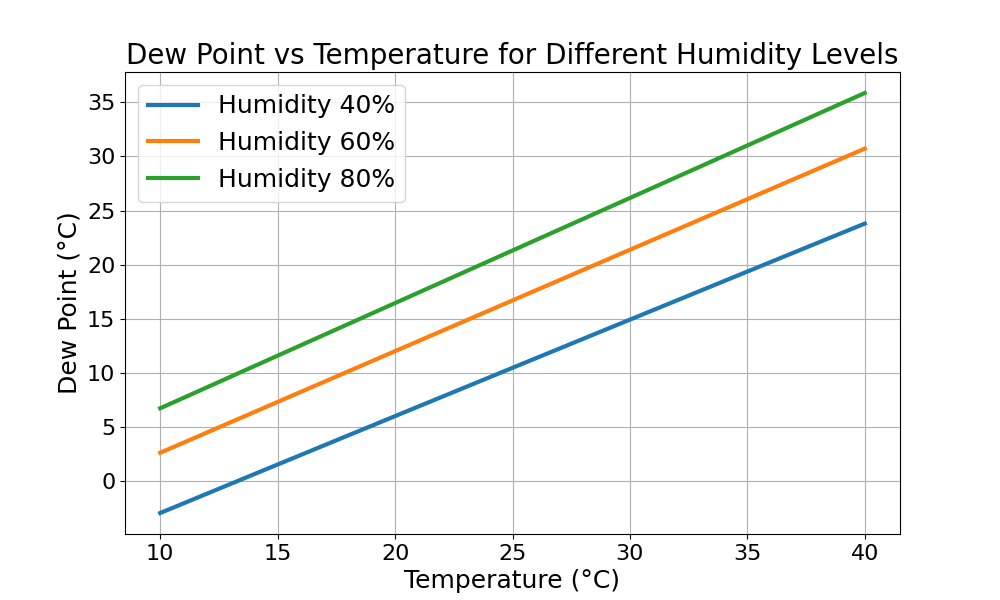

The dew point is important for home owners as it's the deciding factor if you get mold.
It's a combination of temperature in the room, humidity in the room, and the temperature of colder surfaces. As this is typically the window, I will now only mention the window.
The gist of it: Condensation happens, when
- ... the humidity is higher
- ... the outside temperature (and thus the window) is colder
- ... the inside temperature is higher
Here you can see the temperatures:

A few ones:
- If you have a humidity of 40%, the dew-point is:
- For 20°C room temperature at 6°C
- For 25°C room temperature at 10°C
- For 30°C room temperature at 15°C
- If you have a humidity of 50%, the dew-point is:
- For 20°C room temperature at 9°C
- For 25°C room temperature at 14°C
- For 30°C room temperature at 18°C
- If you have a humidity of 75%, the dew-point is:
- For 20°C room temperature at 15°C
- For 25°C room temperature at 20°C
- For 30°C room temperature at 25°C
Created via
import typer # pip install typer
import math
import numpy as np # pip install numpy
import matplotlib.pyplot as plt # pip install matplotlib
from mpl_toolkits.mplot3d import Axes3D
def calculate_dew_point(temperature: float, humidity: float) -> float:
"""
Calculate dew point using temperature and relative humidity
Formula source: https://en.wikipedia.org/wiki/Dew_point#Calculating_the_dew_point
1974 Psychrometry and Psychrometric Charts
"""
a = 17.27
b = 237.7 # °C
alpha = ((a * temperature) / (b + temperature)) + np.log(humidity / 100.0)
dew_point = (b * alpha) / (a - alpha)
return dew_point # round(dew_point, 2)
def plot2d():
# Generate temperature values
temperature_values = np.linspace(10, 40, 100)
# Calculate dew point for different humidity levels
humidity_levels = [40, 60, 80]
# Create a 2D plot
plt.figure(figsize=(10, 6))
for humidity in humidity_levels:
dew_point_values = [
calculate_dew_point(temp, humidity) for temp in temperature_values
]
label = f"Humidity {humidity}%"
plt.plot(temperature_values, dew_point_values, label=label, linewidth=3.0)
# Label the axes
plt.xlabel("Temperature (°C)", fontsize=18)
plt.ylabel("Dew Point (°C)", fontsize=18)
# Increase the font size of tick labels
plt.xticks(fontsize=16)
plt.yticks(fontsize=16)
# Add a legend
plt.legend(fontsize=18)
# Show the plot
plt.grid(True)
plt.title("Dew Point vs Temperature for Different Humidity Levels")
plt.show()
def plot3d():
# Generate data points
temperature_values = np.linspace(10, 40, 50)
humidity_values = np.linspace(0, 100, 50)
temperature_mesh, humidity_mesh = np.meshgrid(temperature_values, humidity_values)
dew_point_values = calculate_dew_point(temperature_mesh, humidity_mesh)
# Create 3D plot
fig = plt.figure()
ax = fig.add_subplot(111, projection="3d")
# Plot the surface
surf = ax.plot_surface(
temperature_mesh, humidity_mesh, dew_point_values, cmap="viridis", edgecolor="k"
)
# Label the axes
ax.set_xlabel("Temperature (°C)")
ax.set_ylabel("Humidity (%)")
ax.set_zlabel("Dew Point (°C)")
# Add a color bar
fig.colorbar(surf, ax=ax, shrink=0.5, aspect=10)
# Show the plot
plt.show()
# Save the plot as a PNG image
fig.savefig("dew_point_graph.png")
def main(temperature: float, humidity: float):
dew_point = calculate_dew_point(temperature, humidity)
typer.echo(
f"The dew point at {temperature}°C and {humidity}% humidity is {dew_point}°C"
)
plot2d()
# plot3d()
if __name__ == "__main__":
typer.run(main)